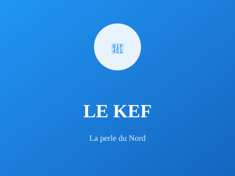

Région montagneuse du nord-ouest

Région montagneuse du nord-ouest, Le Kef est riche en histoire et patrimoine archéologique. La kasbah impressionnante domine le paysage et offre une vue panoramique spectaculaire sur la région.